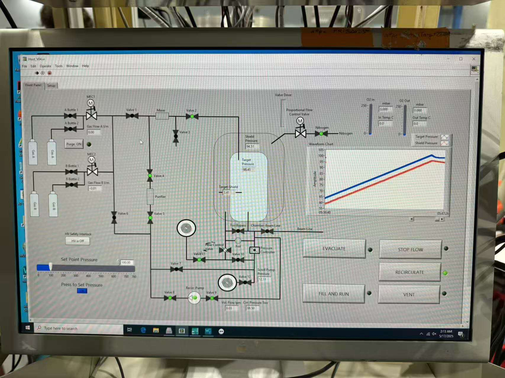

ATTPC实验总览
ATTPC实验总览Documents总体设置探测器位置逻辑设置EN束流线探测器束流线各探测器位置初级靶，Al降能片塑闪，PPACEN beamline DAQATTPC探测器GET线路连接，GET获取界面漂移电场电压ATTPC气路alpha源测试零度探测器Si 探测器GAGG探测器FRIB-DAQ使用的各个插件关于原始数据解码，.tcl配置文件E546 网络相关
Documents
- AT-TPC preparations for RCNP campaign：Preparations.实验总体设置的介绍
- RCNP 网络账号申请以及使用说明：RCNP computer
- AT-TPC campaign Wiki记录： AT-TPC campaign - PukiWiki-backup （pdf备份）， AT-TPC campaign - PukiWiki （访问需要RCNP的账号密码）
- Fribdaq使用说明: Fribdaq_manual
- EN_daq使用说明： ENdaq_manual
- 束流线 Go4使用说明： Go4_manual
- 实验线路连接示意图：线路示意图
- ATTPC-campaign Google 文档： AT-TPC campaign @ RCNP - Google Drive
{kind=link}
总体设置
探测器位置
探测器相对位置如下图所示：
| 束流线设置 |
|---|
 |
探测器实物图相对位置： 从左至右为：F3靶室（两块PPAC，一块硅）；F3塑闪（两端各有一个光电倍增管用于读出）；插板阀；Ion chamber；ATTPC.
| 探测器位置实物图 |
|---|
 |
逻辑设置
- 主trigger 的逻辑参见 Preparations 中的trigger logic。Trigger =
IC(delay 100 us) &&Mesh(stretch 120us) - 系统之间的的连接，以及部分NIM机箱的线路连接见线路示意图. （不涉及具体插件的逻辑结构图：）
逻辑插件所在的NIM机箱：
| 逻辑插件示意图（仅供参考） |
|---|
 |
上图从左到右依次为：
| 序号 | 1 | 2 | 3 | 4 | 5 |
|---|---|---|---|---|---|
| 作用： | 信号衰减； | 信号一分二插件 | Nimttl,ecl信号转换 | 分除插件 | 单路主放 |
| 备注： | 衰减主放输出的IC，Mesh的信号，输出端接入SIS3300 | 输出接入scaler的ECL信号 | 分除IC信号 | IC信号主放。该主放一路输出逻辑信号，一路输出整形后的信号 |
| 序号 | 6 | 7 | 8 | 9 | 10 | 11 | |
|---|---|---|---|---|---|---|---|
| 作用 | 延迟IC信号 | 4通道and 逻辑插件 | 产生Mesh信号的gate | Mesh信号的单路主放 | 一分五TTL转NIM插件 | 4路or插件 | |
| 备注 | 实际并没有延迟功能，而是使用展宽的NIM信号末端的del信号产生一个新的NIM信号 | 用于输出trigger，以及输出busy信号 |
EN束流线探测器
束流线各探测器位置
| EN beamline setting |
|---|
 |
- F0：初级靶 (Be 1/2.5/3/4.5 mm)
- F1：Al降能片（具体安装厚度待定）+狭缝
- F2：PPAC + Si (320um)+ PPAC + 塑闪（100um）
- F3 ：PPAC + Si (320um)+ PPAC + 塑闪 (100um)
初级靶，Al降能片
初级靶，Al降能片的厚度，位置等具体信息见wiki 中的F1，F2章节
- AT-TPC campaign - PukiWiki （访问需要RCNP的账号密码），wiki中的Be靶厚度为束流测试结果。
- AT-TPC campaign - PukiWiki-backup （打印出的pdf备份）
| 束流线磁铁，步进电机，F2荧光靶 （6.4调束） |
|---|
 |
F0，F1 步进电机控制系统使用说明：（待补充）
EN Magnets控制系统使用说明：（待补充）
塑闪，PPAC
| F2,F3塑闪（图中标签为之前的塑闪厚度） | F3_PPAC |
|---|---|
 |  |
| F3塑闪信号 | PPAC信号：阳极（黄），阴极（绿） |
 |  |
F2，F3塑料闪烁体
- 塑料闪烁体两端各有一个光电倍增管读出：F2PL_L，F2PL_R，F2PL_L，F2PL_R
- 厚度：100um
- 工作电压：1500V. (使用CAEN SY403远控电压)
F2，F3 PPAC
气压：工作气体为异丁烷（C4H10）,气压在20torr时的工作电压过高。气压后更改为10torr
工作电压：在说明中设定电压均为700V，6.4号针对11Be次级束的工作电压：
F2U F2D F3U F3D 813V 808V 797V 851V
EN beamline DAQ
DAQ详细使用说明：EN beamline DAQ - PukiWiki
说明中包含：
- 操作，设置，转数据说明
- 各个通道的mapping
- 刻度数据的位置
- vme获取系统，主要插件为v1190和madc32
ATTPC探测器
| ATTPC结构示意图 |
|---|
 |
ATTPC的主体结构示意图如上图所示。与示意图不同的是，本次束流从pad端入射，pad中心挖去了直径为30mm的圆孔。阳极的电压为10kV，阳极一侧安装了零度探测器。
AT-TPC的各个系统，在Preparations有详细的介绍，但是图片清晰度极低。
GET线路连接，GET获取界面
ATTPC 的电子学路数共10240路，需要10个COBO，每个COBO板支持1024路。
- COBO：连接两个ZAP板，每个ZAP板包含两个ASAD板。因此一块COBO连接4块ASAD
- ASAD：包含4个AGET芯片，每个芯片支持64路电子学。因此一块ASAD路数为256路
| ZAP板对应线序 | GET机箱，左侧10个COBO用于ATTPC，最后一个用于零度Si探测器 |
|---|---|
 |  |
| ATTPC法兰 | 安装内圈ZAP板：需要从内圈逐个向外安装，尤其注意右侧内圈要调整气路管道的位置。 |
 |  |
GET获取的控制界面为AT-TPC Envoy，GUI界面如下图所示：
- 最左侧为手动输入的runlog，可以记录束流，电压等信息
- 最上方为当前载入的配置文件
.yaml，包含增益，trigger延迟，阈值等信息 - 左侧的
Envoy列表包含11个COBO和一个Mutant，每一个COBO对应一个Mac mini服务器。COBO的状态status，有described,prepared,ready，需要一步一步progress到ready，才能开始获取。如果修改配置文件，或者出现无法采数的情况，也需要回退到described的状态，重新开始配置。 - 最下方为实时监测的
Data rate，实验时需要密切关注是否有数据读入。
| AT-TPC envoy |
|---|
 |
目前没有关于AT-TPC envoy 的操作手册，无法处理以下的问题：
- 如何打开AT-TPC envoy界面
- 如何打开并正确修改配置文件
- 如何连接Mac mini server
漂移电场电压
AT-TPC的电子漂移区域可以分为：
- 阴极(-10kV)到V1，电子漂移区域
- V2到pad，信号放大区域
| HV Power control。右下角可以监控每个通道的漏流大小，以判断tpc是否打火 | 漂移以及放大区域的结构 |
|---|---|
 | |
| V2-V5和塑闪使用同一个高压插件供电。在测试的过程中，V1-V4高压插件损坏，使用另一个高压插件的四路代替。同时V1比较特殊，只能使用原先的插件。 | 某种高压保护插件 |
 |
ATTPC气路
ATTPC的气路目前没有完整的连接逻辑图，也没有实验时的操作手册待补充
在气路准备就绪的情况下，只需要在控制界面设定气压值，即可完成，充气，放气，循环的操作。下图中Target和shield正在同时充气，充气是需要维持target的气压略大于shield，以保证target气体的纯净。
| AT-TPC Gas Handling system |
|---|
|  |
alpha源测试
首先，使用脉冲发生器，检验pad，GET是否正常工作，以及mapping是否正确。该步骤在使用get之前都需要检查，因为COBO可能没有正确启动。
在测试时，向Mesh的test端输入一个脉冲信号，该信号为连续的五个脉冲。Mesh上的电压信号会在同尺寸的pad上感应出相同幅度的信号。
下图中为脉冲发生器测试数据，左侧为pad的响应，中间为结合脉冲的时间信息重建的三维径迹，右侧为某一块ASAD上的信号波形。在测试时，主要观察pad的响应。由于两种尺寸的pad信号幅度不同，并且设置了不同的增益，因此在正常情况下，只会表现出两种信号幅度。
当一些通道没有信号时，下图表现为pad信号缺失；当mapping错误时，下图表现为出现多种不同幅度的pad信号。此时需要检查ASAD板是否连接牢固，供电是否正常，重启COBO，线序是否正确~.
在pad的响应图中，可以拖动GUI中的圆圈图标，查看每个pad的mapping，并在最上方界面中查询相应的通道，绘制出原始信号的波形图（get 采样率12.5 MHz，采样点数512）。
| 某些ASDA异常的情况 | ASDA均正常的情况 |
|---|---|
 |
在脉冲发生器测试之后，即可充入工作气体，加上电压，利用ATTPC内壁上沾染的裂变源(约5MeV)，进行测试。测试时需要对Mesh信号所使用的前放进行降噪，同时根据工作气体和气压仔细调节电压（电压需要根据以往测试的经验进行设置：部分参考参数）。
{kind=link}
| 主放输出的Mesh信号 | alpha粒子径迹（60torr异丁烷） |
|---|---|
 |
alpha粒子的径迹如右图所示，在正常情况下，径迹是一条直线。可以通过能损大小，判断出aplha粒子的出射位置。
增益：120 小pad， 140大pad
零度探测器
Si 探测器
Si探测器使用的型号为ttt4，128 128 strips，10 10 cm，500um（第一层） + 1000um（第二层）.
ttt4 每一面设计了四组排针，排针的定义如右图所示。非常诡异的是，ttt4的正反面呈旋转对称结构。无论你将正面还是反面朝上，排针的指向和硅条的朝向都一模一样。说明书的一个细节可以用于区分正反面：观察示意图最下方位置，两个大的金色方块，上方有一个更小金色的方块，存在这个小方块的即为正面。（可以放大本页面观察）
| ttt4示意图 | ttt4转接板 |
|---|---|
 |
由于ttt4的对称性，无论是正面面向束流，还是背面面向束流，都不会改变接口的线序。但是ttt4到ASAD的转接板就并非如此了。其旋转180度也能严丝合缝的使用，但是却会导致Si的某几路信号之间接地。这是测试零度Si时，观察到巨大漏流的原因。因此，该转接板在使用时需要小心的判断正确的连接方向。
下图为安装了第一层Si的情况，左侧的一块ASAD板用于读出两块Si正面的256路信号，右侧的一块ASAD板用于读出背面的256路信号。在加电压时，需要给一块ASAD的HV1,HV2加上电压（测试时约为100V），另一块ASAD板使用50匹配。
在进行第一层500um硅的alpha源测试时，由于背面转接板方向错误，部分硅条信号接地，导致漏流偏大，能谱分辨较差。测试1000um的硅时，由于始终无法测到信号，纠正了转接板的问题。此时能谱的分辨极好.（由于数据为h5格式，尚未进行完善的分析。并且由于第二层硅已经安装上，无法再对第一层硅进行测试。
| 安装在支架上的ttt4 | Si的ASDA板 |
|---|---|
| 500um tt4测试数据 | 1000um tt4测试数据 |
GAGG探测器
Si探测器后方设计了两层GAGG探测器，用于探测零度重离子和gamma射线。所以GAGG均使用APD，型号为S8664-1010，灵敏面积为 mm.
两层GAGG的信号由APD上的2pin线引出，先经过前放，然后经过主放（MSCF-16），最后经过MDU-16，将主放输出的差分信号转为lemo 单端信号，最后输入firb获取插件。
| 安装完毕的GAGG | 尝试包装第二层GAGG |
|---|---|
 |
最初开始测试GAGG时，测试电压为400V，此时观察前放输出的信号，可以频繁的发现由于大火导致的放电信号，表现为：指数衰减信号的上升沿处存在巨大的反冲。因此，在之后的测试中电压控制在360V，一组GAGG的漏流约1uA.
第一层GAGG
尺寸为 mm，光收集面使用光学胶耦合apd，其他面（包括粒子入射面）均使用ESR膜包裹。
阵列，但是由于其中一块GAGG实际上是耦合了一块PD，所以实际只使用了24块，在边角的位置去掉了一块。
最初测试时使用了25MeV的前放，最后使用了CAEN A1442B前放，该前放为32路，有40MeV和200MeV两档量程，可以方便的通过外置跳线进行更改。该前放的最大差分输出为4.5V，衰减时间为50us.
使用CAEN 前放的200MeV挡位，未加高压时的噪声~ mV。360V电压，Co60源情况下，前放信号幅度20-30mV，按照目前的估计该前放满足测量9Li的需求
GAGG信号上升沿 GAGG信号幅度 考虑到第一层GAGG在沉积重离子时会产生幅度很高的信号，可能会超过FRIB-daq插件的接受范围。因此主放增益调节为1，但是通过示波器观察主放输出信号的幅度，仍然是前放的2倍左右。为了降低信号幅度，将第一层GAGG的MDU-16的增益调节为1/2，此时主放输出的信号幅度和前放接近，主放起到整形滤波的作用。（理论上也可以不使用主放）
第二层GAGG
- 尺寸为 mm，光收集面使用硅脂耦合apd，其他面全部使用生料带包裹。
- 包装第二层GAGG时，由于支架设计的冗余过小，不得不只使用生料带在包装的同时固定住APD，以减少包装材料的厚度。同时还需要去掉支架的格栅，以及部分螺丝。由于只使用了两层生料带，APD固定的并不牢固。
- 使用25MeV量程的前放。360V电压，Co60源情况下，主放信号幅度100-200mV. 中途重新插拔了APD的2pin线 之后，前放输出的信号幅度显著降低。（插拔过程中导致硅脂耦合效果变差）目前没有重新测量分辨率，观察主放信号，信噪比尚可。
APD 能量和分辨随时间的变化
使用vme 获取系统，360V电压，Cs137源情况下，对第一层的8块GAGG进行了约22个小时的测试（6.6， 14：00——6.7， 10：00）。下图提取了每半个小时的峰道址和能量分辨率。峰道址呈现出多个极值点，能量分辨则略有变差。峰道址的变化可能和温度有关，目前没有进行过更长时间的测量
| 峰道址随时间的变化 | 能量分辨随时间的变化 |
|---|---|
FRIB-DAQ
使用的各个插件
GAGG以及scaler由FRIB的数字化获取系统负责记录。该获取系统有一个建议的使用说明（仅限于start,stop ）：Fribdaq_manual. 该使用说明唯一需要注意的一点就是当终端输出和示例不一致，或者无法正常begin时，需要使用./restarting命令重启系统。
NSCL DAQ的网页详细说明： NSCL DAQ Software Documentation 内容过于冗长，参考性较低
| FRIB DAQ获取机箱 |
|---|
 |
- 最左侧的为主控插件VM-USB（说明书：VM-USB_Manual ），如果需要原始数据解码，则需要查阅该说明书~
- SIS36/38 XX 为scaler 插件，各个通道对应的scaler信号来源：scaler list
- 中间的插件为v977，具体作用现在不太清楚。
- 中间的三个8通道ADC，为SIS3300/1，两种插件基本一致，说明书见：SIS330X ，最大输入信号5V
- 最后一个插件为16通道ADC，SIS3316，说明书见：SIS3316，最大输入信号2/5 V
目前ADC通道的分配情况：（gagg的mapping还需要进一步确认）
- SIS3316 的16路，对应第一层GAGG的前16路
- SIS3301(倒数第二个插件)，对应第一层GAGG的后8路
- 第一个SIS3300，前两路为IC，Mesh信号，后六路为第二层GAGG的9-14路（第二层没有足够的获取通道）
- 第二个SIS3300，接入第二层GAGG的1-8路
关于原始数据解码，.tcl配置文件
frib_daq生成的数据为.evt结构的16进制文件，目前有用于观察波形的Igor程序。下面简述从中提取外部时间戳，也就是scaler的方法：
第一个事件详细验证：原始数据: 00 1e 00 00 00 04 00 00 00 fb 17 0d 00 00 00 58 57 10 01 77 09 02 00 03 19数据分解:起始标志: 00 1e事件序号位置: 09 (小端序) => 0000000D时间戳位置: 02 0 (小端序) => 01105758间隔4字节: 0 03结束标志: 03 19
16进制的数据中00 1e实际表示1e 00，标志获取记录到一个event，19 03则表示获取中的第一个插件，19 03之前包含着时间戳和事件序号，之后则为波形数据。
FRIB_DAQ 配置文件：
SIS330x 为adc1,adc2,adc3，目前的有两种采样设置，实验时需要根据trigger相对于GAGG信号的延迟重新设置
SIS3316为adc4，该模块的设置略有不同：
- -range 中的参数设置为5V
- -dcoffset 中的0xc000 16进制数用于设置基线，该数值越小，基线高度越高，需要根据信号调整。
- SIS3316的采样率参数似乎不起作用，始终以125MHz的频率运行
- SIS3316 配置中
-samples [lrepeat 4 2048] -pretrigger [lrepeat 4 3000]，其中2048为采样点数，3000为从trigger到达的位置往回推3000个采样点，然后开始采样。
E546
基本情况
束流情况：C ，约85MeV，调束时流强约0.8nA，在实验过程中进入attpc的束流强度为5000-10000（ion chamber给出）之间，中途经历过多次调整。在实验中不使用任何束流线探测器
ATTPC设置： ATTPC工作气体为异丁烷（C4H10），工作气压57.7torr（前大半部分实验）。V_MM = 300V，V_THGEM = 50V。Ion Chamber的工作气体也为异丁烷，气压100torr，工作电压60V.
Trigger设置：放弃使用
(Mesh && IC)，使用(attpc_multi && TC)作为trigger ，同时只有半径大于50mm的pad参与attpc_multi的响应。更换trigger原因：束流的准直并不能达到所有径迹均限制在空洞的要求，因此仅使用Mesh，会记录大量的束流事件
可能存在的问题：
- 实验过程中主要监测了
IC_rate和attpc_multi两个参数，并没有实时监测attpc的气压和电压数据，可能会影响数据分析结果。 - 虽然已经使用了扣除半径50mm以内响应的
attpc_multi作为trigger信号，但是在实验过程中经常出现束流强度不变，但是attpc_multi大幅上升的情况，此时束流方向发生偏转，需要经常联系加速器进行调整
初步筛选的 2 track 事件数据：
| 电荷沉积与射程的二维关联图；两个track的theta角度关联 |
|---|
 |
| 在二维关联图上筛选出12C，同时限制phi角（即限制两个track处于同一个平面），此时的theta角度关联 |
 |
| 电荷沉积与射程的二维关联图；两个track的phi角度关联 |
 |
| 在二维关联图上筛选出12C，此时的theta角度关联 |
 |
网络相关
从外网（edu）登入rcnp的账户
- ssh user@login-a.rcnp.osaka-u.ac.jp
- 输入账户密码，随后ssh跳转到其他服务器
从内网（rcnp-gp）登入rcnp账户
- ssh user@saho-a
- 输入账户密码，随后ssh跳转到其他服务器
其他服务器
go4 所在服务器，ssh -Y daq@lawrencium (PW: rcnpdaq)
调束数据服务器，ssh daq@plutonium -Y （PW: rcnpdaq1）
- 原始数据(6.4调束)位置:/home/daq/ridf/attpc
- 转出数据位置：/home/daq/exp/attpc/users/trong/ENridf2root
可以远程连接frib-daq的中转电脑：ssh attpc@172.16.204.68 (pw：activetarget)，E546实验原始数据，decode数据，以及初步的分析程序位于该电脑
GAGG主放插件远控服务器：ssh -Y quser@nihonium (pw: rcnpdaq)
- screen /dev/ttyUSB0
- SC
- 读取参数：RE 0(bus序号) 1(bus中的主放地址) 21(要读取的参数)
- 设置参数：SE 0 1 21 10